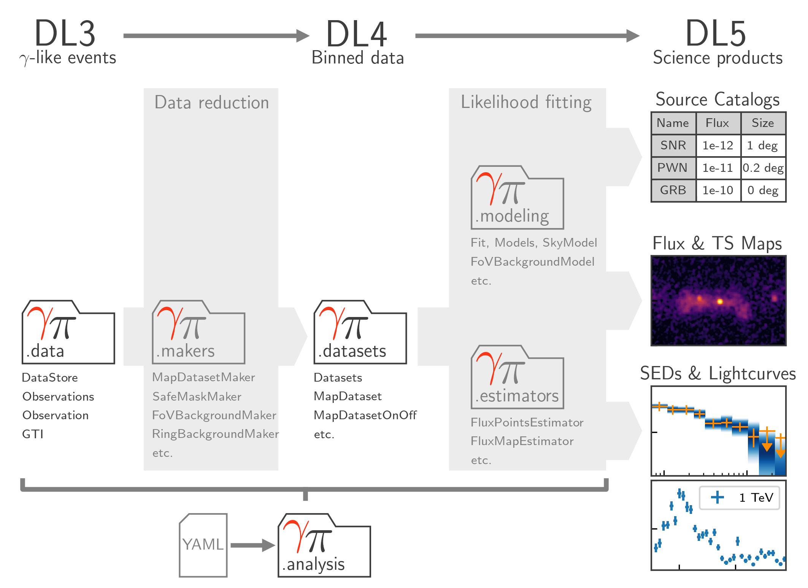

Package structure#
This page gives an overview of the main concepts in Gammapy. Fig. 1 illustrates the general data flow and corresponding sub-package structure of Gammapy. Gammapy can be typically used with the configuration based high level analysis API or as a standard Python library by importing the functionality from sub-packages. The different data levels and data reduction steps and how they map to the Gammapy API are explained in more detail in the following sections.
{kind=link}

Fig. 1 Data flow and sub-package structure of Gammapy. The folder icons represent the corresponding sub-packages. The direction of the the data flow is illustrated with shaded arrows. The top section shows the data levels as defined by CTA.#
Data access and selection (DL3)#
The analysis of gamma-ray data with Gammapy starts at the “data level 3” (DL3, ref?). At this level the data is stored as lists of gamma-like events and the corresponding instrument response functions (IRFs). The instrument response includes effective area, point spread function (PSF), energy dispersion and residual hadronic background. In addition there is associated meta data including information on the observation such as pointing] direction, observation time and observation conditions. The main FITS format supported by Gammapy is documented on the Gamma Astro Data Formats page.
The data access and instrument response is implemented in gammapy.data and gammapy.irf.
Data reduction (DL3 to DL4)#
In the next stage of the analysis the user selects a coordinates system, region or energy binning and events are binned into multidimensional data structures (maps) with the selected geometry. The instrument response is projected onto the same geometry as well. At this stage users can select additional background estimation methods, such as ring background or reflected regions and exclude parts of the data with high associated IRF systematics by defining a “safe” data range. The counts data and the reduced IRFs are bundled into datasets. Those datasets can be optionally grouped and stacked and are typically written to disk to allow users to read them back at any time later for modeling and fitting.
The data reduction and background estimation methods are implemented in gammapy.makers.
Datasets (DL4)#
The datasets classes bundle reduced data in form of maps, reduced IRFs, models and fit statistics. Different sub-classes support different analysis methods and fit statistics (e.g. Poisson statistics with known background or with OFF background measurements). The datasets are used to perform joint-likelihood fitting allowing to combine different measurements, e.g. from different observations but also from different instruments or event classes. They can also be used for binned simulation as well as event sampling to simulate DL3 events data.
To learn more about datasets, see gammapy.datasets and gammapy.maps.
Modeling and Fitting (DL4 to DL5)#
The next step is then typically to model and fit the datasets, either individually, or in a joint likelihood analysis. For this purpose Gammapy provides a uniform interface to multiple fitting backends. It also provides a variety of built in models. This includes spectral, spatial and temporal model classes to describe the gamma-ray emission in the sky. Independently or subsequently to the global modelling, the data can be re-grouped to compute flux points, light curves and flux as well as significance maps in energy bands.
To learn more about modeling and fitting, see gammapy.modeling and gammapy.estimators.
High Level Analysis Interface#
To define and execute a full data analysis process from a YAML configuration file, Gammapy implements a high level analysis interface. It exposes a subset of the functionality that is available in the sub-packages to support standard analysis use case in a convenient way.
The high level analysis interface methods are implemented in gammapy.analysis.
Other#
Source catalogs#
Access to a variety of GeV-TeV gamma-ray catalogs.
The methods are implemented in gammapy.catalog.
Astropyhics#
Support for simulation of TeV source populations and dark matter models.
The methods are implemented in gammapy.astro.
Statistical utility functions#
Statistical estimators, fit statistics and algorithms commonly used in gamma-ray astronomy.
The methods are implemented in gammapy.stats.
Command line tools#
A command line interface (CLI) for commonly used and easy to configure analysis tasks.
The methods are implemented in gammapy.scripts.
Plotting features#
Helper functions and classes to create publication-quality images.
The methods are implemented in gammapy.visualization.
Utility functions#
Utility functions that are used in many places or don’t fit in one of the other packages.
The methods are implemented in gammapy.utils.